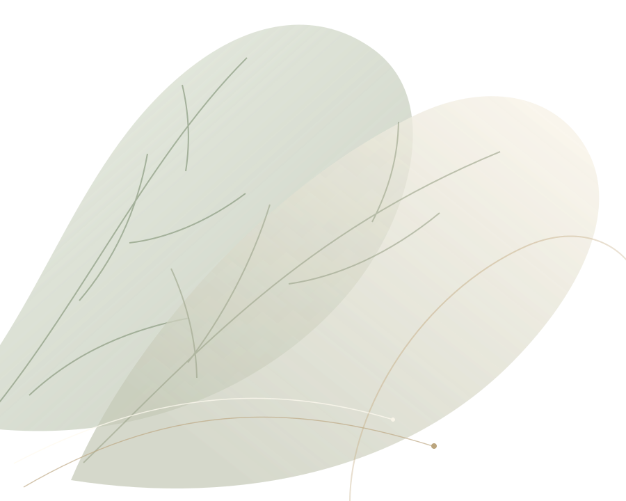
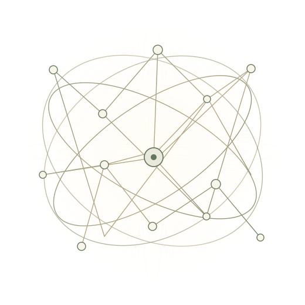

Бережное внимание
Вы можете рассчитывать на моё бережное внимание и атмосферу безопасности.
Психология · системный подход
Приветствую! Меня зовут Ольга Сусленникова.
Я клинический психолог, гипнолог, мастер и тренер НЛП, системный семейный расстановщик.
Я придерживаюсь системного подхода в психологии: смотрю на ситуацию комплексно и ищу ключевой элемент, работа с которым может запустить устойчивые изменения.
Вы можете рассчитывать на моё бережное внимание и атмосферу безопасности.
Клиническая психология и широкий спектр психотерапевтических техник.
Смотрю на вашу ситуацию комплексно и ищу ключевой элемент изменений.
Мне важно, чтобы после сессии у вас были ясность в мыслях и ощущение опоры.
01 / Системный подход
Я придерживаюсь системного подхода в психологии: то есть смотрю на вашу ситуацию комплексно и нахожу тот ключевой элемент в системном психическом процессе, коррекция которого запускает устойчивые изменения. Так терапия становится глубже и даёт долгосрочный эффект.
Выбрать формат работы

02 / Запросы
Здесь есть место разным переживаниям, жизненным ситуациям и вопросам.
Формат работы подбирается с учётом конкретной ситуации.
Если не нашли свой запрос в списке, его можно обсудить на первой диагностической консультации.
03 / Методы работы
Я владею широким спектром психотерапевтических техник — от быстрых приёмов снятия острого эмоционального состояния до глубокой проработки травматического опыта и смены глубинных убеждений. И подбираю тот способ работы, который подойдёт именно вам в вашей конкретной ситуации.
Индивидуальная работа с вашим запросом.
Сессия гипноза онлайн в Zoom.
Индивидуально на фигурках или в группе с заместителями.
Мастер и тренер НЛП.
04 / Знакомство
Приветствую! Меня зовут Ольга Сусленникова. Я клинический психолог, гипнолог, мастер и тренер НЛП, системный семейный расстановщик.
Вы можете рассчитывать на моё бережное внимание, атмосферу безопасности и профессионализм.
Мне важно, чтобы наша работа приносила результат. Чтобы после сессии вы уходили в ресурсном состоянии, с ясностью в мыслях и ощущением опоры.
Я владею широким спектром психотерапевтических техник и подбираю тот способ работы, который подойдёт именно вам в вашей конкретной ситуации.
Услуги и цены05 / Услуги и цены
Продолжительность, формат и стоимость каждой услуги.
1500 ₽ 4500 ₽
60 минут, онлайн в Zoom
Познакомимся, разберём ваш запрос и наметим план работы.
Записаться4500 ₽
1–1,5 часа, онлайн в Zoom
Пакет 5 сессий — 20000 ₽
Записаться6000 ₽
1,5–2 часа, онлайн в Zoom
Метод работы подбирается под конкретную ситуацию.
ЗаписатьсяСтоимость указана за соответствующую услугу. Формат и способ работы можно обсудить на первой консультации.
06 / FAQ
Если остались вопросы о формате работы, их можно обсудить при записи.
Написать в TelegramМы познакомимся, разберём ваш запрос и наметим план работы.
Первая консультация — 60 минут. Консультация психолога — 1–1,5 часа. Сессия гипноза — 1,5–2 часа. Продолжительность расстановки зависит от формата и составляет примерно 1,5–2 часа.
Я подбираю тот способ работы, который подойдёт именно вам в вашей конкретной ситуации. Запрос и возможный план работы можно обсудить на первой диагностической консультации.
Консультации психолога и сессии гипноза проходят онлайн в Zoom. Групповые расстановки доступны онлайн в Zoom и очно в Санкт-Петербурге.
Зависимости входят в список запросов, с которыми я работаю в рамках комплексной терапии. Также можно обратиться, если вы родственник или близкий человек зависимого.
Можно начать с разговора
Если вам отзываются мои слова, записывайтесь на первую диагностическую консультацию, где мы познакомимся, разберём ваш запрос и наметим план работы.
Записаться на первую диагностическую консультациюУже после первой встречи вы можете почувствовать себя гораздо лучше.
Первая консультация · 1500 ₽ · 60 минут · Онлайн в Zoom